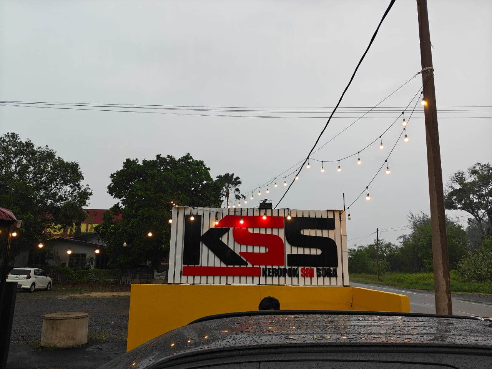
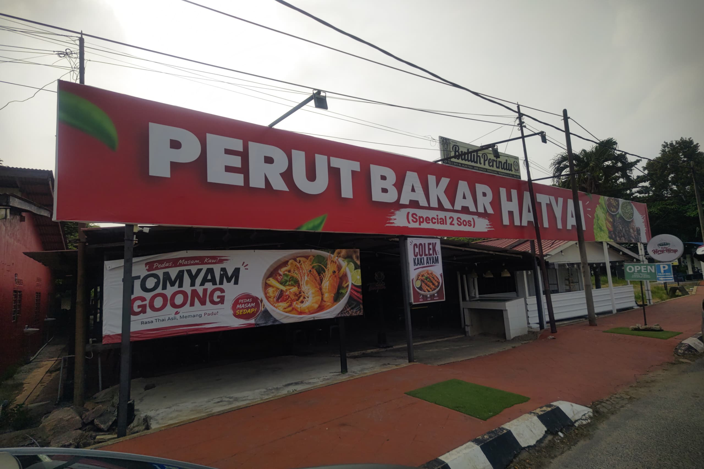
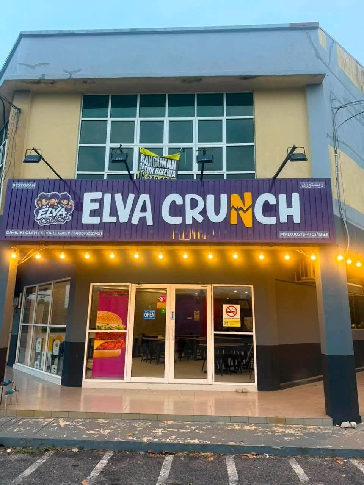
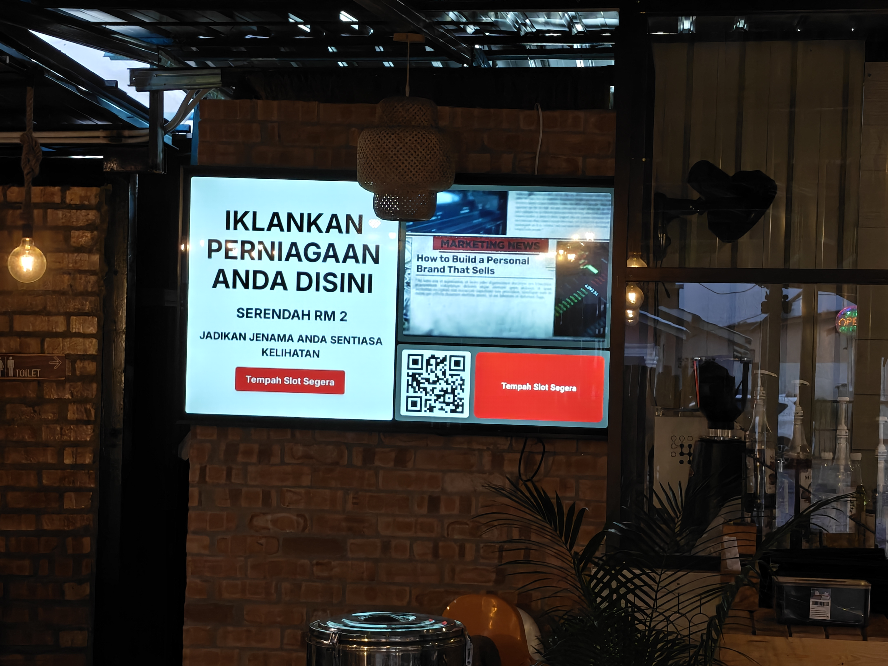
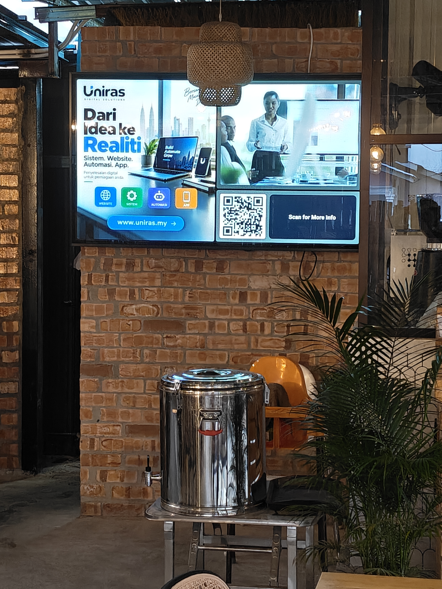

Skrin komuniti sedang beroperasi.
Rakaman sebenar di premis LOOKaL.
LOOKaL ialah rangkaian skrin komuniti di Malaysia yang meletakkan iklan perniagaan tempatan di premis yang orang memang datang setiap hari — tempat makan, kedai gunting, kedai runcit dan ruang menunggu. Anda pilih tempat, pilih hari, dan iklan anda muncul dekat dengan orang yang anda mahu capai.
Skrin komuniti sedang beroperasi.
Rakaman sebenar di premis LOOKaL.
Lokasi dan suasana berbeza.
Lihat bagaimana skrin ditempatkan dalam premis sebenar.
Rangkaian yang sedang berkembang.
Lebih daripada satu jenis premis dan kedudukan skrin.
LOOKaL bermula dengan lokasi yang dekat dengan komuniti dan berkembang secara berperingkat ke premis yang sesuai.
Setiap premis dipilih kerana ada aliran orang, masa menunggu atau aktiviti yang sesuai. Fokusnya ialah kualiti lokasi, bukan sekadar menambah bilangan skrin.
Jika pelanggan anda selalu datang, duduk, menunggu atau berurusan di premis anda, ruang itu mungkin sesuai untuk menjadi lokasi skrin komuniti LOOKaL.
Pilih lokasi, siapkan iklan dan hantar. Semuanya dalam satu aliran yang mudah difahami.
Pilih premis yang dekat dengan pelanggan anda dan tentukan bila iklan mahu berjalan.
Gunakan poster sendiri atau bina dengan Snap2Ads supaya mesej kekal ringkas, jelas dan mudah dibaca.
Selepas semakan, iklan anda dihantar ke skrin yang anda pilih.
LOOKaL memudahkan pengurusan kempen secara digital, tetapi iklan tetap muncul pada skrin di premis komuniti.
Kurangkan proses manual yang biasa datang dengan media fizikal.
Kedai, ruang menunggu dan premis yang memang mempunyai pergerakan orang setiap hari.
Hari ini, anda memilih lokasi dan hari. Arah pembangunan seterusnya ialah membantu memahami bila dan di mana audience yang sesuai berada — berdasarkan data agregat daripada ruang fizikal.
Ukur corak kehadiran mengikut lokasi dan waktu secara agregat.
Fahami berapa lama orang berada di kawasan skrin, bukan hanya berapa kali iklan dimainkan.
Matlamatnya ialah membantu mencadangkan lokasi dan masa berdasarkan konteks audience, bukan sekadar pilihan manual.
Privacy-first. Ini ialah visi pembangunan masa depan, bukan fungsi semasa. Fokusnya ialah data agregat tanpa facial recognition atau pembinaan identiti individu.
Beberapa contoh penempatan LOOKaL — supaya anda boleh lihat sendiri bagaimana skrin hadir dalam konteks premis.



.jpeg)


Tiga demo ringkas menunjukkan aliran sebenar dari dashboard hingga bahan iklan dihantar.
Tambah video sebagai add-on RM10 untuk setiap campaign. Durasi tayangan ialah 8 saat. Jika video anda lebih panjang, pilih dan potong bahagian yang mahu digunakan terus dalam editor Snap2Ads sebelum dihantar.
Kami bezakan jumlah tayangan daripada jumlah orang. Satu tayangan bermaksud iklan dimainkan di skrin — bukan bermaksud seorang individu pasti melihatnya.
Jika skrin beroperasi 8–12 jam sehari dan semua 30 slot terisi, satu iklan secara matematik boleh dimainkan sekitar 112–169 kali sehari. Angka ini ialah tayangan pada skrin, bukan jumlah individu yang melihat.
Sepanjang 30 minit menunggu, satu slot berpeluang muncul kira-kira tujuh kali.
Kami sedang mencari lebih banyak premis yang sesuai untuk membawa skrin komuniti LOOKaL ke kawasan setempat.
LOOKaL mengurus iklan, jadual tayangan dan rekod asas di belakang skrin supaya pemilik premis tidak perlu menguruskannya satu per satu.
LOOKaL berkembang secara berperingkat. Kami utamakan premis yang memang ada aliran orang dan masa menunggu yang sesuai.
Butiran kerjasama dan perkongsian hasil diterangkan selepas premis dinilai, supaya janji dibuat berdasarkan keadaan sebenar lokasi.
Jawapan ringkas tentang apa itu LOOKaL, bagaimana kempen berjalan dan apa yang sebenarnya diukur.
LOOKaL ialah rangkaian skrin komuniti untuk iklan perniagaan tempatan di premis sebenar. Pengiklan boleh memilih lokasi, memilih hari dan mengurus kempen secara digital tanpa perlu mengurus setiap skrin secara manual.
Tidak. Pengurusannya dibuat secara digital seperti online ads, tetapi iklan dipaparkan pada skrin fizikal di premis sebenar. LOOKaL menggabungkan kemudahan pengurusan digital dengan kehadiran media di dunia sebenar.
Boleh. Snap2Ads membantu membina bahan iklan yang sesuai untuk skrin komuniti. Fokusnya ialah mesej ringkas, susunan yang jelas dan mudah dibaca dari jarak tontonan sebenar.
Boleh. Untuk ruangan poster pada skrin LOOKaL, gunakan format portrait 8:9. Contoh resolusi: 1080×1215 px atau 1280×1440 px. LOOKaL tidak crop, stretch atau mengubah design asal poster anda.
Ya. LOOKaL membenarkan anda bermula dengan lokasi yang paling relevan dengan komuniti pelanggan anda.
Boleh bermula satu hari. Anda boleh tambah tempoh atau lokasi berdasarkan keperluan kempen.
Boleh. Video Zon B ialah add-on RM10 untuk setiap campaign. Setiap tayangan video berdurasi 8 saat. Jika video anda lebih panjang, anda boleh potong bahagian yang mahu digunakan terus dalam editor Snap2Ads sebelum submit.
Platform merekodkan status kempen dan tayangan. Jika iklan menggunakan kod QR atau tindakan yang boleh dijejak, rekod itu boleh digunakan sebagai maklumat tambahan — berasingan daripada bilangan tayangan skrin.
Pilih satu lokasi, cuba satu hari, dan lihat sendiri bagaimana skrin komuniti LOOKaL boleh membawa iklan anda lebih dekat kepada pelanggan.